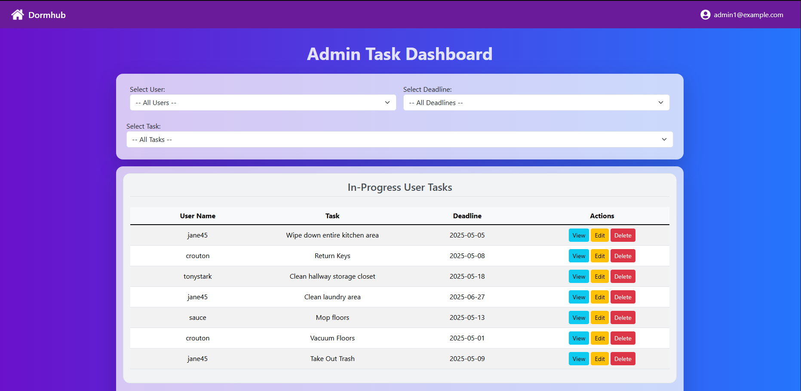

APPLICATION / VERIFICATIONDormhub
A team-built full-stack application helping college faculty assign tasks to students living in dorms.
Explore the project +
This project was made with a group of 4 team members including myself called Dormhub, a mobile friendly full stack application to help faculty for colleges assign tasks to students living in the dorm rooms. We followed some real world practices such as Agile methodologies, product visioning, user personas, all while using GitHub. The app features role-based access control using JWT tokens for secure frontend-backend communication. The frontend of the app was built using React+Vite in Visual Studio Code, and the backend with Spring Boot in Eclipse, using Postman, pgAdmin4, and JUnit for API and logic testing. We deployed the full stack app using Netlify for the frontend and Render for the backend. We then used some basic Search Engine Optimization with keywords, a description, favicon, and an Open Graph preview using the Google Search Console.
The original portfolio notes that the backend is no longer running. The guest frontend and source repositories are linked below.